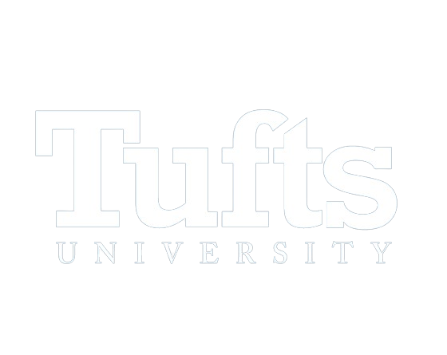

Hi! I'm João Quintanilha
An engineer who loves to work with data, AIs, websites and applications.
You can contact me on my e-mail
You can contact me on my e-mail
As a recent graduate from Tufts University in Boston with dual degrees in Computer
Science and Biology, I am now advancing my expertise through a Master’s Degree at Tufts,
honing my skills in software engineering and integrating them with data science. I am a software engineer driven by
ambition and a passion for innovation. My extensive experience spans website and application development,
alongside deploying Artificial Intelligence and Machine Learning algorithms to enhance system functionalities.
Beyond software and data engineering, my involvement in bioinformatics research across Brazil, the United States, and Germany has leveraged
data analysis and Python programming.
|  |  |  | |
|---|---|---|---|
| Palantir Scholar | Pega Scholar | BRASA Scholar | Tisch Scholar |
 Figma
Figma
 Photoshop
Photoshop
 WordPress
WordPress
Hi! Hackathon · Institut Polytechnique de Paris · Nov – Dec 2024
🏆 1st Place – Technical Excellence: Achieved 69% F1 score, outperforming next-best team by 5%. Led as Tech Leader on an AI-smart mobile app for French farmers to predict groundwater levels. Created a comprehensive business report to analyze market needs and assess product viability within the French commercial context.
Tufts Human Factors & Ergonomics Society · Medford, MA · Jul 2023 – Jul 2024
Rebuilt the entire website (36 pages) using JavaScript and HTML/CSS, improving member engagement by 25%. Worked under an Agile development methodology, creating a Notion dashboard to integrate and manage all team tasks. Streamlined maintenance by implementing a content management system, allowing owners to update content independently.
BRASA Hacks · Columbia University, NY · Aug 2024
Designed and developed a securitization platform for Bank BTG Pactual using TypeScript, React, Prisma ORM and MongoDB. Engineered Ethereum tokens by designing smart contracts based on deterministic functions to respond to the environment. Implemented a secure user authentication system utilizing Gmail OAuth 2.0 for seamless login.
Tableau · Python · Data Visualization
Designed 4 interactive Tableau dashboards treating Brazilian governmental data. Preprocessed data in Python and generated analysis and visuals related to national accountability, enabling transparent insight into public expenditures.

Palantir Foundry · Apr – May 2025
Built an AIP app integrating a language model to paraphrase archaic text, enhancing readability in classic literature datasets. Deployed data workflows in Foundry to extract keywords and generate context-aware footnotes using LLM logic functions. Engineered NLP pipelines to chunk, paraphrase, and summarize literary passages at scale using Palantir AIP tools.
Association of Computing Machinery · Ioannina, Greece · Jun – Jul 2025
Selected globally for competitive summer program hosted by ACM Europe Council. Completing courses in network science, sustainable ML, graph databases, and data stream processing. Building hands-on projects using NebulaStream, graph analytics, and energy-aware ML tools.
Argonne National Laboratory · ALCF, Virtual · Feb – Apr 2024
Selected for a US Department of Energy training program focused on leveraging AI within supercomputing environments. Built advanced neural networks and explored LLM embedding and tokenization techniques using supercomputers. Applied parallel training methods to optimize large-scale ML tasks, enhancing computational efficiency by 50%.

Tufts Dept. of Urban & Environmental Policy & Planning · Medford, MA · May – Jul 2024
Built the first version of an agent-based model for water consumption in Pakistan using the MESA library in Python. Reviewed 30,000+ data points on industrial water usage alongside government reports to initialize agents of the model. Developed a text classification algorithm that categorized 67% of the data, speeding up the production of charts and analyses.
SENAI Vila Canaã · Goiânia, Brazil · Apr 2015 – Nov 2016
Pre-college research converting plastic bags and cups into ecological foam for upholstery. Created foam composed of recycled polypropylene and polystyrene, used in dust-mite-proof pillows. Lectured at Saint Bonaventure University and Bluefield College on sustainability. Achieved 4th place out of 300 as "Innovative Solution" at the 2016 WorldSkills Brazil.
FIRST Robotics · SESI Vila Canaã School · Goiânia, Brazil · May 2023 – Present
Mentor 10 teenagers for the FIRST Robotics Competition, implementing autonomous robot programs in Java and guiding ML integration with robot sensors. Mentored 15 kids for the FIRST LEGO League, teaching mechanical principles and introductory programming using LEGO EV3 toolkits — leading them to 1st place in Robot Design at the National FLL tournament.